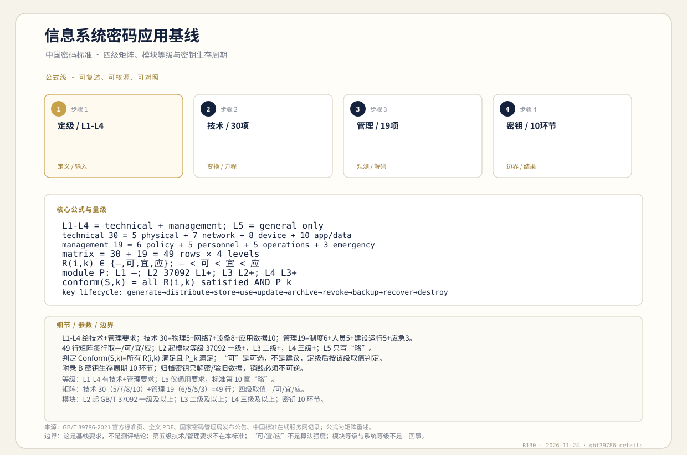
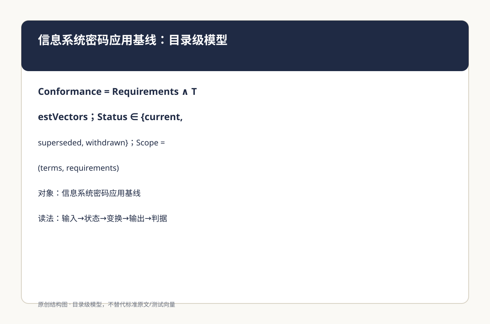

原理与机制
标准：信息系统密码应用基本要求（Basic Requirements for Cryptography Application in Information Systems）。GB/T 39786-2021 把信息系统的密码应用要求写成一张四级矩阵。第一至第四级同时给技术与管理要求；第五级只写“略”，不给技术/管理条款。技术 4 层是物理和环境、网络和通信、设备和计算、应用和数据；管理 4 维是制度、人员、建设运行、应急。数行：技术 30 行 = 物理 5 + 网络 7 + 设备 8 + 应用数据 10；管理 19 行 = 制度 6 + 人员 5 + 建设运行 5 + 应急 3；合计 49 行。每行在四级上取“—/可/宜/应”，强度递增；“可”是可选，“宜”是推荐，“应”是必须。密码模块等级随系统等级：L2 起要求 GB/T 37092 一级及以上，L3 二级及以上，L4 三级及以上；L1 的产品行是“—”。因此系统等级、技术/管理行、模块等级是三张不同的表，不能互相替代。判定式：Conform(S,k)=∀i R(i,k) 满足 ∧ P_k 满足。它表达的是“该系统在第 k 级是否同时满足所有适用行与模块等级”，不是“得了多少分”。

为什么重要
这是“基线”而不是“测评方法”。它告诉你第一至第四级各应做什么，不告诉你测评机构如何抽样、评分、判不符合；测评还要看配套测评标准与密码产品认证。为什么是 49 行而不是 30 行：技术 30 行是四个层面里的具体控制点，管理 19 行是制度/人员/建设运行/应急的组织控制；只看技术会漏掉密钥管理、人员岗位与应急。为什么第五级单列：标准只给通用要求，技术/管理条款“略”；把第五级当成“L4 再加几条”会误读。为什么模块等级单独写：系统 L3 要求模块 L2+，不是“系统三级=模块三级”；模块等级是产品认证的安全保障级别，系统等级是业务/数据保护级别。
应用与实例
落地顺序：1) 按业务/数据定系统等级；2) 取该级 49 行中适用的技术要求与管理要求；3) 把每行落到密码服务/产品/流程；4) 按系统等级选模块等级；5) 按附录 B 管密钥 10 环节；6) 留制度、记录、评估与应急证据。典型映射：L1 只做最低技术 + 基础制度/密钥规则；L2 加操作规程、岗位责任、培训、预案；L3 加真实性/机密性、制度修订/发布/记录、评估与演练；L4 再加完整性/不可否认性。密钥 10 环节是产生、分发、存储、使用、更新、归档、撤销、备份、恢复、销毁；归档密钥只能解密/验证历史数据，销毁必须不可逆。

边界与攻击面
“可”不是“建议采用”：在基线语境它是可选；但系统定级后，评估按该级取值判定，不会因为“可”就自动算通过。标准不替代测评结论、不替代 GB/T 37092 产品认证、不替代密钥生命周期审计；它也不保证具体密码算法/产品安全。第五级没有技术/管理条款，不能拿 L4 条款倒推 L5。常见错误：只看技术 30 行，漏管理 19 行；把模块等级等同系统等级；把“应”写成“宜”；把附录 B 的资料性建议当强制条款；把 49 行当得分表。
历史与背景
2018 年国家密码管理局发布 GM/T 0054-2018《信息系统密码应用基本要求》，作为行业标准先行；GB/T 39786-2021 在此基础上修改完善并上升为国家标准，2021-03-09 发布、2021-10-01 实施，24 页，现行。官方发布公告明确它是商用密码应用与安全性评估的基础性标准；该条目按 2021 版写，不把后续测评标准或地方细则混入。
技术参数与复算边界
该条目的形式模型是 (S=\min_i S_i,\quad S_i\in{\text{密钥强度},\text{分组安全},\text{实现安全}})。输入：输入：信息系统密码应用基本要求的公开参数、密钥/随机数与消息；变量说明：S 为综合安全强度；各分量取最小值，不能只看密钥位数。 预期输出：按 信息系统密码应用基本要求 的规范执行后得到可验证的输出或可比较的优势界。 复算必须给出输入、步骤、输出和单位；示例只演示流程，不替代标准测试向量。
复杂度由密钥长度、分组/状态规模、轮数、随机数质量和敌手模型共同决定；参数越界、版本差异与实现侧信道都可能使公式结论失效。已登记限制：该条目只给出形式模型与可复算步骤，不声称已完成生产实现、侧信道认证或第三方安全评估。
逐步示例与核验
形式模型与复算步骤
[S=\min_i S_i,\quad S_i\in{\text{密钥强度},\text{分组安全},\text{实现安全}}]
信息系统密码应用基本要求的公开参数、密钥/随机数与消息；变量说明：S 为综合安全强度；各分量取最小值，不能只看密钥位数。1.读取标准规定的密钥/分组/模式参数。2.按标准表换算等效强度。3.取最弱分量作为系统强度。边界：公式只覆盖已登记的参数与假设；参数取值、标准版本和实现细节仍以来源为准。
参考出处
- Wikipedia search entry for 信息系统密码应用基本要求. https://zh.wikipedia.org/w/index.php?search=%E4%BF%A1%E6%81%AF%E7%B3%BB%E7%BB%9F%E5%AF%86%E7%A0%81%E5%BA%94%E7%94%A8%E5%9F%BA%E6%9C%AC%E8%A6%81%E6%B1%82
- Handbook of Applied Cryptography (Menezes, van Oorschot, Vanstone). https://www.cacr.math.uwaterloo.ca/hac/